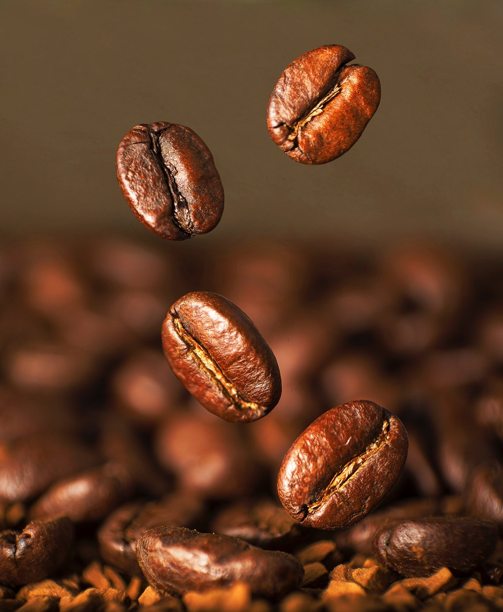
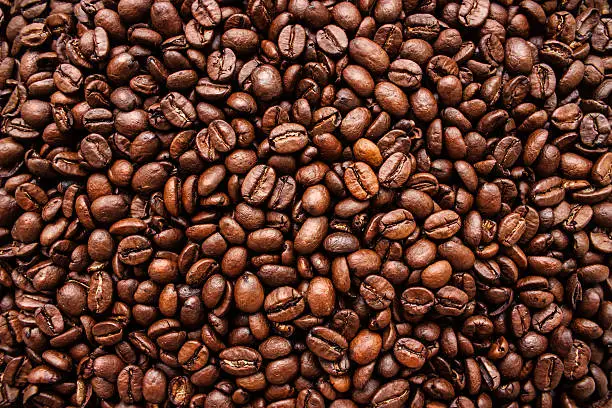

Según el origen: El café proviene de distintas zonas productoras de climas cálidos y húmedos, todas ellas ubicadas entre los trópicos de Cáncer y Capricornio.
VARIEDADES DE CAFÉ
Existen más de 60 especies de cafetos en el mundo, pero las utilizadas con fines comerciales son la Arábica y la Robusta.

Arábica
Originaria de Etiopía, requiere un clima templado y crece idealmente en regiones montañosas, tropicales y húmedas. Se la reconoce mundialmente por su calidad superior y es la especie que más se cultiva en el mundo. Los granos de café arábico dan por resultado una bebida de aroma excelente y sabor delicioso, por ello su costo es mayor en el mercado.

Robusta
Originaria del Congo, crece en zonas ecuatoriales y en terrenos llanos o de poca altura. Esta planta demora hasta un año en madurar y el contenido de cafeína es superior a la especie arábiga. Se le atribuye el nombre “robusta” por ser una plantación resistente a las enfermedades y generalmente se emplea para producir cafés comerciales, es decir, café instantáneo o café molido de mezclas.
AMÉRICA CENTRAL Y EL CARIBE
Predomina la variedad arábiga que se cultiva en México, Panamá, Costa Rica, Guatemala e islas del Caribe.
AMÉRICA DEL SUR
Brasil lidera el mercado mundial del producto seguido por Colombia, Ecuador y Perú, países donde también predomina la variedad arábiga.
ÁFRICA
La mayor parte de los países del continente africano, cálido por excelencia , son productores de la variedad robusta con la salvedad de Kenia, Tanzania y Camerún, que por su ubicación posibilitan el cultivo de la especie arábiga